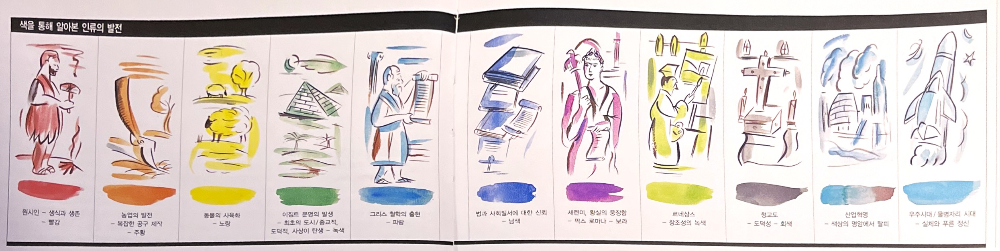
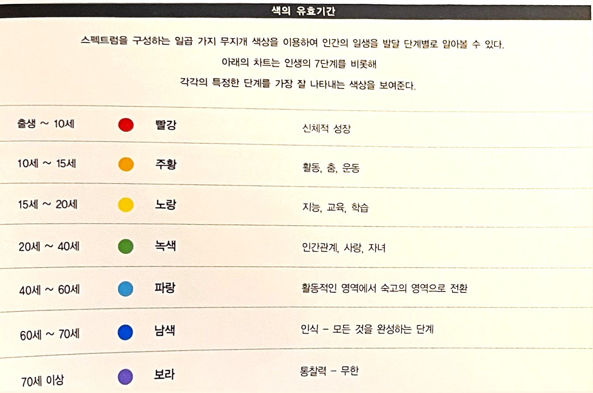
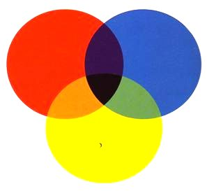
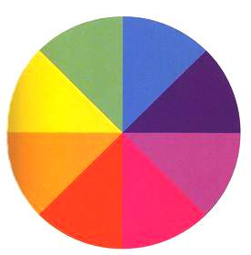
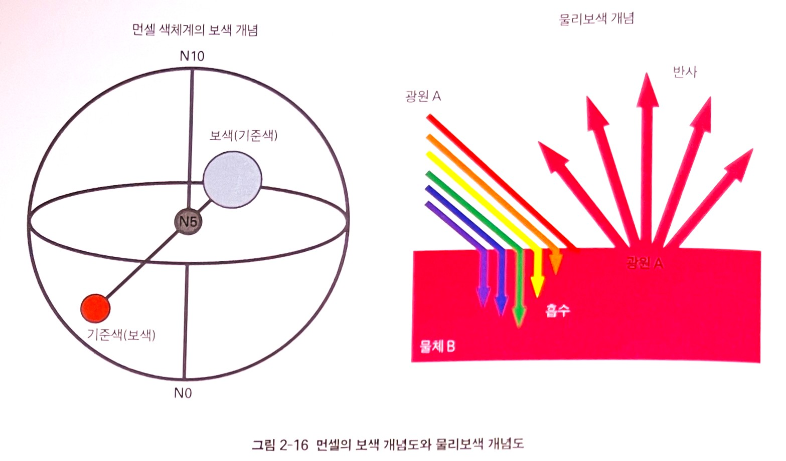
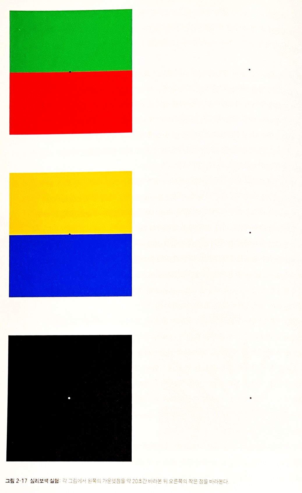
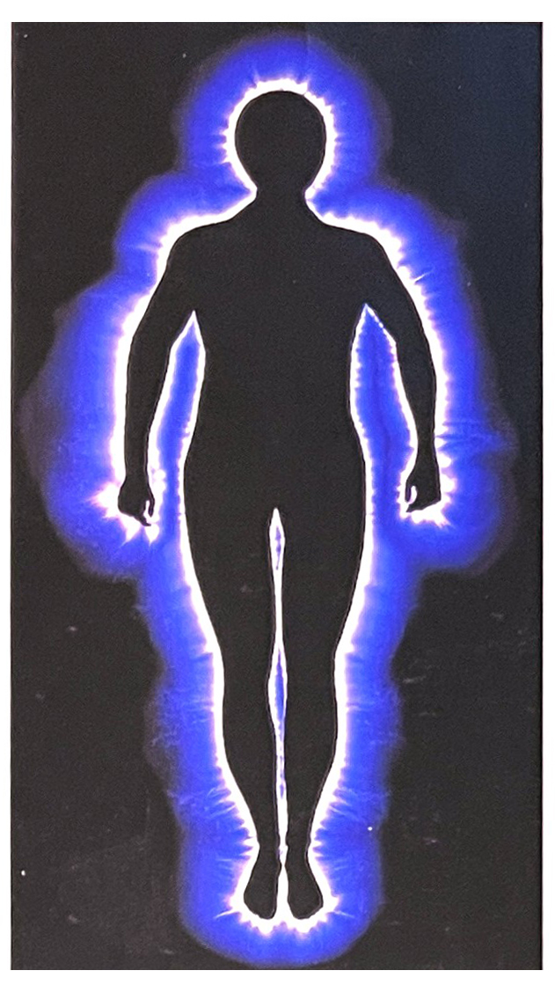
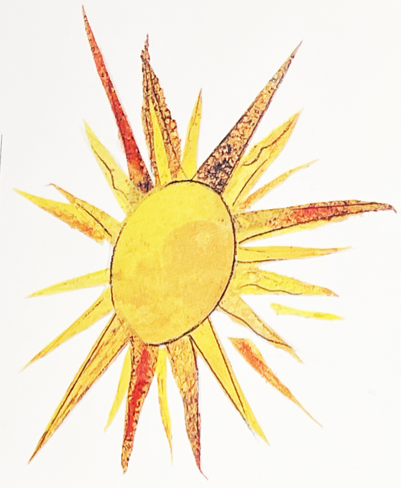
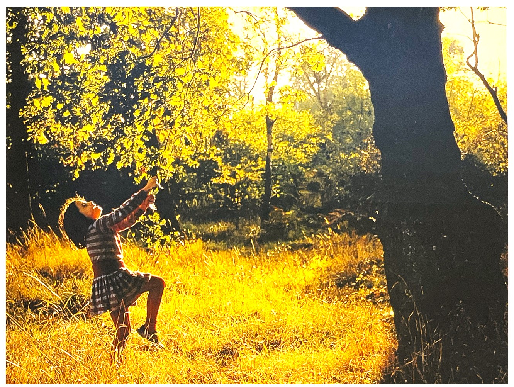

색에 대한 인간의 예민함과 반응은 오랜 세월에 걸쳐 발달되어 왔다. 최근 언어학은 인간의 발달이 색상이 발견된 양상과 아주 유사하다는 사실을 보여준다. 언어학에 따르면, 초창기 언어에는 다른 색상들 간에 구별이 거의 없었다고 한다. 단지 ‘밝은’것과 ‘어두운’것의 차이만 존재했다.
빛깔이 없는 시대였던 셈이다.
그리고 ‘빨간색’이라는, 색을 형용하는 최초의 단어가 생겨났다. 피의 빛깔이 신성한 의미를 지녔던 것으로 보인다. 아주 옛날 선사시대의 매장의식에서는 뼈를 발굴하여 붉은색 황토로 칠한 다음 다시 매장했는데, 이는 아마도 고인에게 다시 생명을 불어 넣어준다는 의미를 지닌 의식이었을 것이다. 오늘날 동유럽 언어 중에는 ‘빨강’이라는 단어가 생명이나 아름다움과 관련되어 있다.
그 다음으로 생겨난 단어는 ‘녹색’과 ‘노란색’이었다. 하지만 오늘날 색상을 표현하는 우리의 언어도 완벽과는 거리가 멀다. 지금 이 순간에도 ‘Brown’에 해당하는 단어가 없는 언어들도 있다. 게다가 우리는 어느 특정한 색상을 형용하는 단어들을 잃어버리기까지 한다. 가령 앵글로색슨 단어인 ‘wann’은 한때 갈까마귀 날개의 윤기나 물에 비쳐 아른거리는 달빛을 나타냈으나 현재 사라졌다.
인류의 발전이 색과 색 지각에 아주 밀접하게 연관되어 있기 때문에, 스펙트럼 단계와 색을 형용하는 언어를 통해 그림 1처럼 인간 발전단계를 알아볼 수 있다.
[그림 1 스펙트럼에 나타난 7가지 색상을 통해 인류의 발전단계를 알아 볼 수 있다]
[색의 유효기간]
숨은 색색을 이용하여 일을 할 때 숨은 색을 아는 것은 매우 중요하다. 예를 들면 주황은 빨강과 노랑으로 만들어진다. 눈으로는 황을 보고 있지만 주황 안에 빨강과 노랑의 기운도 느껴진다. 따라서 주황을 이용하여 치료를 할 때, 주황과 관련된 특징뿐만 아니라 빨강과 노랑의 특징도 알아 두어야 한다.
녹색은 숨은 색이다. 녹색은 그 자체로도 의미를 가지고 있지만, 그 안에 노랑과 파랑의 의미도 함께 담겨 있다.
보라색 안에는 빨강과 파랑이 있기 때문에 보라색의 특징뿐만 아니라 이 두 지 색상의 특징에 대해서도 알아두어야 한다.
[숨은 색 차트]
보색(complementary color)[2]스펙트럼의 각 색상은 서로 보완하는 반대 색상을 가지고 있다. 이를 보색이라고 하는데, 그림과 같은 보색 차트를 보면 서로 도움을 주고 지지해주는 적절한 색을 정확히 찾아낼 수 있다.
당신이 어떤 사람의 행동에 대해 극도로 짜증이 나고 화가 치민다면, 이 순간 당신은 몸속에서 넘쳐나는 빨간색의 기운에 반응하고 있다는 뜻이다. 빨강의 보색은 파랑이다. 따라서 마음속으로 파란색을 떠올려 보고, 파란색 옷을 입고, 파란색 물건을 바라보라. 그리고 화가 누그러질 때까지 이를 계속하라. 어쩌면 거실에 있는 노란색 장식물이 신경에 거슬릴 수도 있다. 그렇다면 그 자리를 떠나기보다 그냥 눈을 감고 노란색의 보색인 보라색을 떠 올려 보라. 이렇게 함으로써 노란색의 진동이 사라지고 평안함을 느낄 수 있다.
치유의 목적으로 각각의 색과 관련된 빛을 이용할 때도 보색을 이용하는데, 우리는 이를 색채요법이라고 부른다. 파란색 빛은 짜증과 화를 내는 것과 관련된 빨간색을 잠재우기 위해 사용된다. 또한 그와 반대로 빨간색을 이용하여 우울함과 관련된 파랑색을 약화시키기도 한다. 만약 어떤 색상에 대해 의심스럽거나 너무나 많은 색상들이 사용되어졌다는 느낌이 들면 녹색 빛을 쐬어 보거나 마음속으로 녹색을 떠 올려 보아라. 녹색은 어떤 상황에 균형과 질서를 재부여하는 중화제 역할을 한다. 오렌지색의 보색은 남색이고, 무지개 색의 중간색인 녹색의 보색은 빨강과 파랑을 혼합한 심홍색(深紅色)이다.
보색 차트
물리보색과 심리보색[4]보색을 이해하기 위해서는 먼저 색 지각의 요소와 빛이 방사되어 우리의 눈에 들어오는 과정을 이해해야 한다. 보색은 색채 지각 현상에서 완전한 색이 되기 위해 어떤 색에 대하여 보완한다는 의미를 갖고 있다. 우리가 이전에 알고 있던 색상환의 반대편의 색, 섞어서 회색이 되는 색 등의 정의는 일부 색채 시스템에만 해당된다. 어떤 색체 시스템을 사용하든 보색은 두 가지로 정의할 수 있다. 광원과 관계되는 물리보색과 사람의 색채 감지와 관계된 심리보색이다.
물리보색complementary[4] 물리보색의 정의는 아래 그림에서 설명될 수 있다. 광원 A와 물체B 그리고 관찰자가 있을 때 광원에서 방사된 빛은 불체에 닿아서 반사되고 흡수된다. 또 반사빛 가운데 표면에서 산란되는 빛을 제외한 빛은 물체색으로 관찰자에게 관찰된다. 물체색에 대한 물리보색은 이 과정에서 물체색으로 인식된 빛을 제외하고 흡수, 산란돤 빛의 총칭을 가리킨다. 수치적으로 설명하면 100이라는 양의 빛이 물체에 방사되어 30은 흡수 또는 반사되고 70이 관찰되었다면 물체색은 70이 되고 물체색에 대한 보색은 30이 되는 것이다. 여기서 30이라는 양과 70이라는 양은 서로 보색 관계에 있다. 또한 물체색 사이의 보색 관계는 성립하지 않는데, 그 이유는 물체색끼리 혼합했을 때 원래의 광원색을 만들 수 없기 때문이다.
따라서 새로운 보색에 대한 정의는 보다 확대된다. 즉 두 색이 보색이라고 정의되는 경우 두 색을 적당하게 섞어서 무채색흰색, 회색, 검은색을 만들 수 있어야 한다. 컴퓨터 상의 HSV 모델에서는 설로 수평적 대응 관계의 색이 보색으로 정의된다. 역사적으로 우리는 항상 높은 패도의 색을 가지고 보색상의 의미를 많이 써 왔다. 그러나 밝기와 채도는 공존하므로 함께 논의 되어야 한다. 국제 조명위원회 CIE1931 색공간common-ion effect, CIE 1931 XYZ 색공간이라고도 함 표준에서는 한 색의 주된 파장영역에 다른 주된 파장을 섞어 무채색을 만들 수 있다면 그것이 보색이라고 정의한다. RGB, CMY 모델에서는 서로 반대되는 쌍, 빨강-시안, 초록-마젠타, 파랑-옐로를 각각 보색으로 정의한다.
심리보색negative afterimages[4] 심리보색은 물리보색과 반대로 인간과 관걔된 것이다. 따라서 색채의 지각 과정 중 물채로부터 인간의 눈에 이른 과정과 눈에서 뇌애 이른 과정과 관련된다. 일찍이 괴테에 의하여 관찰된 심리보색은 헤링의 반대색설과도 연관된다. 이것은 인간의 색채 지각 요소인 망막상의 추상체와 간상체의 특성으로 보여지는 것이다. 심리보색은 인간이 색채를 지각하는 데 추상체 감지 후 시신경 감지 기능 중 빨간색~녹색 감지 유닛과 노란색~파란색 감지유닛, 그리고 밝기를 감지하는 유닛이 서로 균형을 유지하려는 작용에서 나온 것이다.
색채 지각 세포에서 빨간색과 녹색은 하나의 지각 연결고리로 이루어져 있다. 따라서 빨간색을 오래 응시하면 빨간색을 감지하는 유닛도 자극을 받지만 녹색을 감지하는 유닛도 동시에 자극을 받는다. 빨간색의 자극이 사라졌을 때 같이 자극을 받았던 녹색이 환상처럼 눈앞에 어른거린다. 노란색과 파란색의 경우도 마찬가지다. 노란색을 응시한 뒤 노란색이 사라졌을 때 파란색의 잔상을 보게 된다. 이와 같은 것이 심리보색의 원리이며 현상이다. 심리보색의 개념은 단지 위에서 설명된 그림의 색뿐만 아니라 헤링의 반대색 감지 이론을 중심으로 설계된 NCSnatural color system와 일본색채연구소가 1964년에 발표한 PCCSpractical color co-ordinate system에 영향을 주었다. 이 두 색상환에서 마주 보는 색은 심리보색이며, 서로의 잔상색이 된다.
잔상은 기존의 색보다 밝게 보이는 경우가 많은데, 그 이유는 색이 빛으로 감지되기 때문에 물체색의 명도를 보완하는 밝기가 더해죠서이다. 다음 그림을 이용해서 설명해 보면, 먼저 사각형으로 된 부분의 가운뎃점을 약 20초간 응시한다. 그리고 곧바로 오른쪽 흰색 바탕의 가운데 있는 점을 응시한다. 그러면 바로 심리보색의 잔상이 떠오르게 된다. 이것은 흑백의 밝기에도 작용한다. 그림의 검은색 면에 있는 흰점을 같은 방법으로 바라보고 오른쪽의 흰색 면의 점을 바라보면 흰 종이보다 더 밝은 잔상을 보게 된다. 이 학설은 쇼펜하우어와 비엔나의 생리학자 에발트 헤링이 정리하였다.
디자인에서는 먼셀의 전통적인 색상환을 이용하여 반대편의 색상을 보색으로 정의하고 활용한다. 그러나 먼셀의 반대색상은 에술적 보색의 개념이므로 심리보색이나 물리보색에 해당되지 않는다. 따라서 배색이나 디자인 분야에서만 활용되어야 한다. 잔상은 항상 보색으로만 인식되지 않는다. 잔상 중에는 영화에서와 같이 전에 보았던 이미지와 똑같은 이미지가 잔상이 되기도 한다.
 색온도Color temperature[3]'따뜻하다', '차갑다'는 말은 그와 같은 성질을 내포하고 있을 때 사용한다. 일반적으로 빨간색, 주황색, 노란색은 따뜻하게 느껴지고, 파란색, 초록색, 자주색은 차갑게 느껴진다. 따듯한 색과 차가운 색을 뚜렷하게 구분하기는 쉽지 안다. 예를 들어 흰색 종이는 빨간색이나 파란색의 아주 경미한 영향에도 따뜻하거나 차갑게 보일 수 있다. 회색이나 검은색도 마찬가지로 다른 색의 영향을 잘 받는다.
빨강색, 주황색, 노란색은 따뜻한 계열의 색이다. 노란색이 감소하고 빨간색이 증가할수록 더 뜨겁게 보인다.
파랑색, 청록색, 초록색은 차가운 계열의 색이다. 파란색이 가장 차갑고 초록색은노란색이 섞여 조금 따뜻하게 느껴진다.
따뜻한 회색은 적은 양의 노랑이나 빨강을 포함하고 있다. 차가운 회색은 적은 양의 파란색이 섞여있다.
광채(Brilliance)[2]광채는 맑고 투명한 ‘근원의 빛’으로서 모든 색채가 광채로부터 발원되고 다시 회귀된다. 광채는 색채가 아니므로 광채를 흰색과 혼동해서는 안 된다.
또한 광채는 지구상의 색채가 아니라 우주적 지성을 구현하는 우주의 빛이다. 광채는 죽음을 경험해본 사람이 말하는 터널의 양 끝에서 밝게 빛나는 빛이다.
"티벳 사자(死者)의 서(書)the tibetan book of the dead"라는 책에서도 죽은 사람에게 이 빛을 향해 가라고 조언한 바가 있다.
모든 광선은 사랑과 힘과 지혜의 삼위일체를 구현하는 광채를 통해 완벽한 조화를 이룬다. 우리가 사는 지구에 존재하는 광채의 근원은 태양이다.
광채가 없이는 내부적으로든 외부적으로든 아무 것도 볼 수 없다. 광채는 직접적으로 진리와 통하고, 모든 결점과 타락을 노출시키는 강력한 빛이다.
모든 긍정적인 특징과 부정적인 특징의 본질은 광채의 내부에 존재한다. 어떤 사람이 빛난다고 말할 때, 우리는 그 사람의 이상(理想)과 그로부터 발생하는 행동의 순수성을 감지한다.
광채는 우리의 삶을 지탱해주는 밝은 빛이다. 어떤 사람에게 ‘안색이 좋지 않다’라고 말하는 것은 글자 그대로 보면 사실이다. 우리는 그 사람의 빛이 어떤 방법으로 흐려지고 탁해진다는 것을 감지할 수 있다.
빛이 완전히 사라진다면 사람은 죽을 것이다. 빛이 없는 곳에는 생명도 없다.
따뜻한 회색은 적은 양의 
광채로 싸여있는 신체에서 발산되는 생명력
태양은 모든 광채의 근원이다.
빛이 주는 완벽한 영양분의 기쁨을 경험하라. 태양 광선을 쬐며 시간을 보내라.
[참고문헌]
[1] 컬러, 그 비밀스러운 언어 COLOR, 조앤 액스터트, 아리엘 엑스터트, 신기라 옮김, 시그마 북스, 2014.9.10.
[2] 몸과 마음을 치료하는 색채, 릴리안 베르너 본즈, 번역 한창환, 도서출판 국제, 2008.1,10.
[3] 좋아 보이는 것들의 비밀 편집&그리드, 이민기 지음, 길벗, 2015.5.1., p262~263
[4] 색채 디자인 교과서, 문은배 지음, 길벗, 2010.12.28
....
....
....